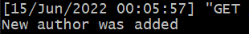
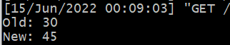
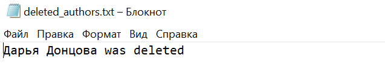

2.4.1 Сигналы
Сигнал, который вызывает логику во время создания экземпляра объекта
models.py
@receiver(post_save, sender=Author)
def handle_new_author(sender, **kwargs):
if kwargs['created']:
print('New author was added')

Сигнал, который сохраняет значения выбранных полей в таблице в специальные поля для хранения предыдущих значений при обновлении объекта
models.py
@receiver(pre_save, sender=Room)
def handle_room_change(sender, instance, update_fields=['capacity'], **kwargs):
old = sender.objects.filter(name=instance)[0].capacity
new = instance.capacity
print('Old: {}\nNew: {}'.format(old, new))

Сигнал, который при удалении объекта записывает информацию об удалении в лог, реализованный любым образом
models.py
@receiver(pre_delete, sender=Author)
def handle_author_delete(sender, **kwargs):
file = open('deleted_authors.txt', 'a')
file.write(str(kwargs['instance']) + ' was deleted')
file.close()
